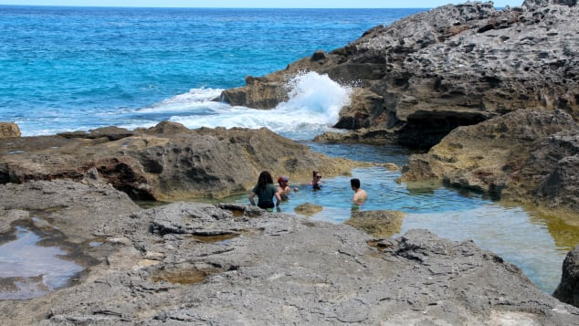

The contrast is arresting, particularly from the air. With sturdy shoes, you can climb the rugged karst hill above the bridge for a wider view up and down the slim island and across the two bodies of water.
Violent storms have long since washed away a natural stone arch that once stood on the site of today's concrete bridge. But American artist Winslow Homer was able to capture the arch in his circa 1885 painting "Glass Window."
Rough weather and high sea swells can lead to bridge closures and dangerous situations, so it's best to avoid the area when conditions are poor.
About a half mile south of the Glass Window Bridge, there's another stunner well worth a visit.
The Queen's Bath is a series of natural pools carved into rock by centuries of pounding surf on the wild Atlantic side of Eleuthera.
The surf washes into the pools for a refreshing dip when outside temperatures are warm but not blazing hot. When it gets hotter, the pools are warmed by the sun to a bath-like temperature.
It's best to visit when the tide is fairly low and to skip it altogether when the surf is rough. The rocky "bathtub" surfaces are quite sharp and water shoes or tennis shoes are a must.
Both the bridge and the baths are about a 15-minute drive from North Eleuthera Airport, which during normal travel times welcomes direct flights from Atlanta, Fort Lauderdale and Miami.